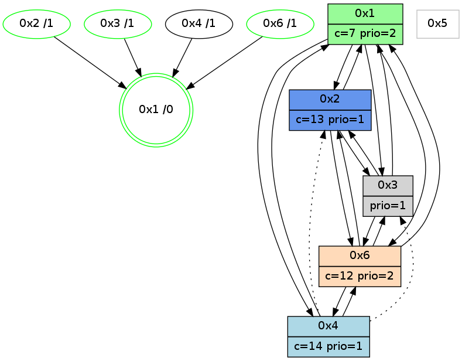

>> << IDX [start] -100 -25 -5 +0 +5 +25 +100 [1015.36882615]
 Previous packets
1010.005600 beacon06(adaf) #0 coord=01,02,05,03,04,06 cycle=432.0ms assoc 64 4e 36
1010.017328 [Hello(2): seq=1304 sym=3,6,1 sysInfo=hasWarning stat=3:1,13,11,4/6:4,13,11,2/1:0,0,4,0]
1010.019865 [Hello(6): seq=729 sym=4,2,1,3 sysInfo=hasWarning stat=4:4,0,4,0/2:1,6,4,2/1:12,13,10,1/3:8,4,1,6]
1010.023014 [Color(6) seq=201 @0:0 color=12 prio=2 c=7,d,e;1,4,6,8,9,b]
1010.026927 [Color(3) seq=145 @0:0 prio=1 c=7,c,d;1,4,6,8,9,b,e]
1010.028728 [Hello(1): seq=716 sym=2,4,6,3 sysInfo=hasWarning,coloring-mode-on,ColoringModeRequestCalled stat=2:13,13,8,3/4:4,0,5,0/6:13,11,15,3/3:0,0,0,0]
----------------------------------------------------------------------
1010.447745 beacon01(adaf) #0 coord=01,02,05,03,04,06 cycle=432.0ms assoc
-- color-indic=1 64 33 9e
1010.457706 beacon02(adaf) #0 coord=01,02,05,03,04,06 cycle=432.0ms assoc 64 62 61
1010.467706 beacon05(adaf) #0 coord=01,02,05,03,04,06 cycle=432.0ms assoc 64 c4 4b
1010.477707 beacon03(adaf) #0 coord=01,02,05,03,04,06 cycle=432.0ms assoc 64 58 6f
1010.487706 beacon04(adaf) #0 coord=01,02,05,03,04,06 cycle=432.0ms assoc 64 fe 45
1010.497707 beacon06(adaf) #0 coord=01,02,05,03,04,06 cycle=432.0ms assoc 64 8a 59
1010.509442 [Hello(4): seq=817 sym=1,6 asym=2,3 sysInfo=hasWarning stat=1:2,2,15,0/6:13,2,11,4/2:4,2,0,0/3:5,13,2,0]
1010.511863 [STC(1) #0.151 new-neigh,tree-change,inconsistent-stability,stable,to-color d=0]
1010.515094 [Color(1) seq=243 @0:0 color=7 prio=2 c=1,4,6,8,9,b,c,d;0,2,3,5,a,e]
1010.517361 [Color(2) seq=203 @0:0 color=13 prio=1 c=7,c,e;1,4,6,8,9,b]
----------------------------------------------------------------------
1010.939855 beacon01(adaf) #0 coord=01,02,05,03,04,06 cycle=432.0ms assoc
-- color-indic=1 64 7f 2e
1010.949815 beacon02(adaf) #0 coord=01,02,05,03,04,06 cycle=432.0ms assoc 64 2e d1
1010.959816 beacon05(adaf) #0 coord=01,02,05,03,04,06 cycle=432.0ms assoc 64 88 fb
1010.969818 beacon03(adaf) #0 coord=01,02,05,03,04,06 cycle=432.0ms assoc 64 14 df
1010.979817 beacon04(adaf) #0 coord=01,02,05,03,04,06 cycle=432.0ms assoc 64 b2 f5
1010.989816 beacon06(adaf) #0 coord=01,02,05,03,04,06 cycle=432.0ms assoc 64 c6 e9
1011.001362 [STC(4)->1 #0.151 new-neigh,tree-change,inconsistent-stability,to-color d=1]
1011.003456 [STC(3)->1 #0.151 new-neigh,tree-change,inconsistent-stability,stable,to-color d=1]
1011.006052 [Color(3) seq=146 @0:0 prio=1 c=7,c,d;1,4,6,8,9,b,e]
1011.008331 [Color(6) seq=202 @0:0 color=12 prio=2 c=7,d,e;1,4,6,8,9,b]
1011.010587 [Hello(2): seq=1305 sym=3,6,1 sysInfo=hasWarning stat=3:2,14,11,4/6:5,14,11,2/1:1,0,4,0]
1011.014729 [Hello(1): seq=717 sym=2,4,6,3 sysInfo=hasWarning,coloring-mode-on,ColoringModeRequestCalled stat=2:13,14,8,3/4:5,0,5,0/6:13,11,15,3/3:0,0,0,0]
----------------------------------------------------------------------
1011.431962 beacon01(adaf) #0 coord=01,02,05,03,04,06 cycle=432.0ms assoc
-- color-indic=1 64 bb 41
1011.441923 beacon02(adaf) #0 coord=01,02,05,03,04,06 cycle=432.0ms assoc 64 ea be
1011.451924 beacon05(adaf) #0 coord=01,02,05,03,04,06 cycle=432.0ms assoc 64 4c 94
1011.461924 beacon03(adaf) #0 coord=01,02,05,03,04,06 cycle=432.0ms assoc 64 d0 b0
1011.471923 beacon04(adaf) #0 coord=01,02,05,03,04,06 cycle=432.0ms assoc 64 76 9a
1011.481924 beacon06(adaf) #0 coord=01,02,05,03,04,06 cycle=432.0ms assoc 64 02 86
1011.493658 [Hello(4): seq=818 sym=1,6 asym=2,3 sysInfo=hasWarning stat=1:3,3,0,0/6:13,3,11,4/2:5,3,0,0/3:5,13,2,0]
1011.495993 [Color(2) seq=204 @0:0 color=13 prio=1 c=7,c,e;1,4,6,8,9,b]
1011.499644 [Color(1) seq=244 @0:0 color=7 prio=2 c=1,4,6,8,9,b,c,d;0,2,3,5,a,e]
----------------------------------------------------------------------
1011.924069 beacon01(adaf) #0 coord=01,02,05,03,04,06 cycle=432.0ms assoc
-- color-indic=1 64 f6 46
1011.934031 beacon02(adaf) #0 coord=01,02,05,03,04,06 cycle=432.0ms assoc 64 a7 b9
1011.944030 beacon05(adaf) #0 coord=01,02,05,03,04,06 cycle=432.0ms assoc 64 01 93
1011.954031 beacon03(adaf) #0 coord=01,02,05,03,04,06 cycle=432.0ms assoc 64 9d b7
1011.964032 beacon04(adaf) #0 coord=01,02,05,03,04,06 cycle=432.0ms assoc 64 3b 9d
1011.974032 beacon06(adaf) #0 coord=01,02,05,03,04,06 cycle=432.0ms assoc 64 4f 81
1011.984887 [Hello(1): seq=718 sym=2,4,6,3 sysInfo=hasWarning,coloring-mode-on,ColoringModeRequestCalled stat=2:13,14,8,3/4:5,0,5,0/6:13,11,15,3/3:0,0,0,0]
1011.987562 [Color(3) seq=147 @0:0 prio=1 c=7,c,d;1,4,6,8,9,b,e]
1011.989427 [Hello(2): seq=1306 sym=3,6,1 sysInfo=hasWarning stat=3:2,14,11,4/6:5,14,11,2/1:2,1,4,0]
1011.992321 [Color(6) seq=203 @0:0 color=12 prio=2 c=7,d,e;1,4,6,8,9,b]
----------------------------------------------------------------------
1012.416177 beacon01(adaf) #0 coord=01,02,05,03,04,06 cycle=432.0ms assoc
-- color-indic=1 64 32 29
1012.426139 beacon02(adaf) #0 coord=01,02,05,03,04,06 cycle=432.0ms assoc 64 63 d6
1012.436138 beacon05(adaf) #0 coord=01,02,05,03,04,06 cycle=432.0ms assoc 64 c5 fc
1012.446139 beacon03(adaf) #0 coord=01,02,05,03,04,06 cycle=432.0ms assoc 64 59 d8
1012.456139 beacon04(adaf) #0 coord=01,02,05,03,04,06 cycle=432.0ms assoc 64 ff f2
1012.466138 beacon06(adaf) #0 coord=01,02,05,03,04,06 cycle=432.0ms assoc 64 8b ee
1012.477844 [Hello(4): seq=819 sym=1,6 asym=2 sysInfo=hasWarning stat=1:4,4,0,0/6:13,4,11,4/2:6,4,0,0]
----------------------------------------------------------------------
1012.908286 beacon01(adaf) #0 coord=01,02,05,03,04,06 cycle=432.0ms assoc
-- color-indic=1 64 7e 99
1012.918247 beacon02(adaf) #0 coord=01,02,05,03,04,06 cycle=432.0ms assoc 64 2f 66
1012.928247 beacon05(adaf) #0 coord=01,02,05,03,04,06 cycle=432.0ms assoc 64 89 4c
1012.938247 beacon03(adaf) #0 coord=01,02,05,03,04,06 cycle=432.0ms assoc 64 15 68
1012.948247 beacon04(adaf) #0 coord=01,02,05,03,04,06 cycle=432.0ms assoc 64 b3 42
1012.958247 beacon06(adaf) #0 coord=01,02,05,03,04,06 cycle=432.0ms assoc 64 c7 5e
1012.969983 [Hello(2): seq=1307 sym=3,6,1 sysInfo=hasWarning stat=3:3,14,11,4/6:5,15,11,2/1:2,1,4,0]
1012.972517 [Hello(6): seq=732 sym=2,1,3 sysInfo=hasWarning stat=2:3,9,4,2/1:15,15,10,1/3:11,5,1,6]
1012.974204 [Color(3) seq=148 @0:0 prio=1 c=7,c,d;1,4,6,8,9,b,e]
1012.976746 [Color(6) seq=204 @0:0 color=12 prio=2 c=7,d,e;1,4,6,8,9,b]
1012.983574 [Hello(1): seq=719 sym=2,4,6,3 sysInfo=hasWarning,coloring-mode-on,ColoringModeRequestCalled stat=2:14,14,8,3/4:5,0,5,0/6:14,12,15,3/3:0,0,0,0]
1012.986407 [STC(1) #0.152 new-neigh,tree-change,inconsistent-stability,stable,to-color d=0]
----------------------------------------------------------------------
1013.400395 beacon01(adaf) #0 coord=01,02,05,03,04,06 cycle=432.0ms assoc
-- color-indic=1 64 ba f6
1013.410355 beacon02(adaf) #0 coord=01,02,05,03,04,06 cycle=432.0ms assoc 64 eb 09
1013.420356 beacon05(adaf) #0 coord=01,02,05,03,04,06 cycle=432.0ms assoc 64 4d 23
1013.430356 beacon03(adaf) #0 coord=01,02,05,03,04,06 cycle=432.0ms assoc 64 d1 07
1013.440357 beacon04(adaf) #0 coord=01,02,05,03,04,06 cycle=432.0ms assoc 64 77 2d
1013.450358 beacon06(adaf) #0 coord=01,02,05,03,04,06 cycle=432.0ms assoc 64 03 31
1013.461954 [STC(6)->1 #0.152 new-neigh,tree-change,inconsistent-stability,stable,to-color d=1]
1013.463404 [Color(1) seq=246 @0:0 color=7 prio=2 c=1,4,6,8,9,b,c,d;0,2,3,5,a,e]
1013.465930 [Hello(4): seq=820 sym=1,6 asym=2 sysInfo=hasWarning stat=1:5,4,1,0/6:14,5,11,4/2:7,5,0,0]
1013.467702 [STC(2)->1 #0.152 new-neigh,tree-change,inconsistent-stability,stable,to-color d=1]
1013.469647 [STC(4)->1 #0.152 new-neigh,tree-change,inconsistent-stability,to-color d=1]
1013.470939 [Color(2) seq=206 @0:0 color=13 prio=1 c=7,c,e;1,4,6,8,9,b]
1013.477545 [Hello(3): seq=818 sym=6,2,1 sysInfo=hasWarning stat=6:0,11,7,3/2:4,5,1,0/1:13,7,11,1]
1013.480246 [STC(3)->1 #0.152 new-neigh,tree-change,inconsistent-stability,stable,to-color d=1]
1013.484117 [TreeStatus(3)-.->1 #0.152 new-neigh,tree-change,inconsistent-stability,stable child=1]
----------------------------------------------------------------------
1013.892502 beacon01(adaf) #0 coord=01,02,05,03,04,06 cycle=432.0ms assoc
-- color-indic=1 64 e4 97
1013.902463 beacon02(adaf) #0 coord=01,02,05,03,04,06 cycle=432.0ms assoc 64 b5 68
1013.912465 beacon05(adaf) #0 coord=01,02,05,03,04,06 cycle=432.0ms assoc 64 13 42
1013.922464 beacon03(adaf) #0 coord=01,02,05,03,04,06 cycle=432.0ms assoc 64 8f 66
1013.932464 beacon04(adaf) #0 coord=01,02,05,03,04,06 cycle=432.0ms assoc 64 29 4c
1013.942465 beacon06(adaf) #0 coord=01,02,05,03,04,06 cycle=432.0ms assoc 64 5d 50
1013.954188 [Hello(2): seq=1308 sym=3,6,1 sysInfo=hasWarning stat=3:4,15,12,5/6:6,0,12,2/1:3,1,5,0]
1013.956725 [Hello(6): seq=733 sym=4,2,1,3 sysInfo=hasWarning stat=4:0,0,1,0/2:4,10,5,2/1:0,0,11,1/3:12,6,2,7]
1013.959874 [Color(6) seq=205 @0:0 color=12 prio=2 c=7,d,e;1,4,6,8,9,b]
1013.963363 [Hello(1): seq=720 sym=2,4,6,3 sysInfo=hasWarning,coloring-mode-on,ColoringModeRequestCalled stat=2:14,15,9,3/4:6,0,6,0/6:14,12,0,3/3:1,0,1,1]
1013.969688 [Color(3) seq=149 @0:0 prio=1 c=7,c,d;1,4,6,8,9,b,e]
----------------------------------------------------------------------
1014.384611 beacon01(adaf) #0 coord=01,02,05,03,04,06 cycle=432.0ms assoc
-- color-indic=1 64 20 f8
1014.394572 beacon02(adaf) #0 coord=01,02,05,03,04,06 cycle=432.0ms assoc 64 71 07
1014.404571 beacon05(adaf) #0 coord=01,02,05,03,04,06 cycle=432.0ms assoc 64 d7 2d
1014.414573 beacon03(adaf) #0 coord=01,02,05,03,04,06 cycle=432.0ms assoc 64 4b 09
1014.424572 beacon04(adaf) #0 coord=01,02,05,03,04,06 cycle=432.0ms assoc 64 ed 23
1014.434572 beacon06(adaf) #0 coord=01,02,05,03,04,06 cycle=432.0ms assoc 64 99 3f
1014.446307 [Hello(4): seq=821 sym=1,6 asym=2,3 sysInfo=hasWarning stat=1:6,4,1,0/6:14,6,11,4/2:8,6,0,0/3:0,1,1,1]
1014.448457 [Color(1) seq=247 @0:0 color=7 prio=2 c=1,4,6,8,9,b,c,d;0,2,3,5,a,e]
1014.452499 [Color(2) seq=207 @0:0 color=13 prio=1 c=7,c,e;1,4,6,8,9,b]
----------------------------------------------------------------------
1014.876718 beacon01(adaf) #0 coord=01,02,05,03,04,06 cycle=432.0ms assoc
-- color-indic=1 64 6c 48
1014.886680 beacon02(adaf) #0 coord=01,02,05,03,04,06 cycle=432.0ms assoc 64 3d b7
1014.896680 beacon05(adaf) #0 coord=01,02,05,03,04,06 cycle=432.0ms assoc 64 9b 9d
1014.916679 beacon04(adaf) #0 coord=01,02,05,03,04,06 cycle=432.0ms assoc 64 a1 93
1014.926680 beacon06(adaf) #0 coord=01,02,05,03,04,06 cycle=432.0ms assoc 64 d5 8f
1014.937881 [Hello(1): seq=721 sym=2,4,6,3 sysInfo=hasWarning,coloring-mode-on,ColoringModeRequestCalled stat=2:14,0,9,3/4:6,0,6,0/6:14,12,0,3/3:1,1,1,1]
1014.940554 [Hello(6): seq=734 sym=4,2,1,3 sysInfo=hasWarning stat=4:0,0,1,0/2:5,11,5,2/1:1,1,11,1/3:13,7,2,7]
1014.943719 [Color(6) seq=206 @0:0 color=12 prio=2 c=7,d,e;1,4,6,8,9,b]
1014.947469 [Hello(2): seq=1309 sym=3,6,1 sysInfo=hasWarning stat=3:5,0,12,5/6:7,1,12,2/1:4,1,5,0]